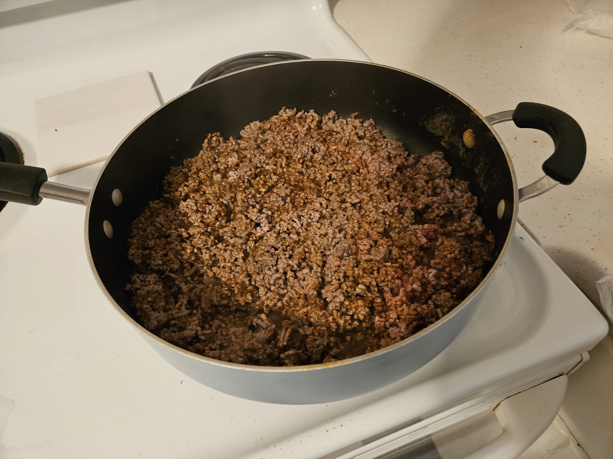
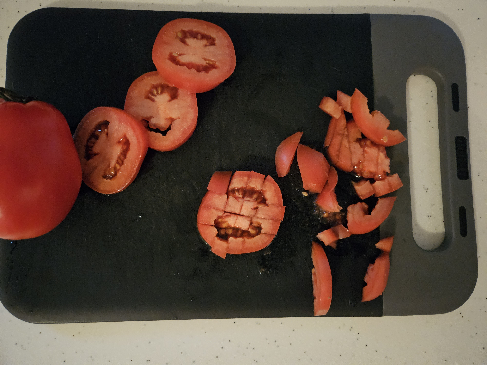
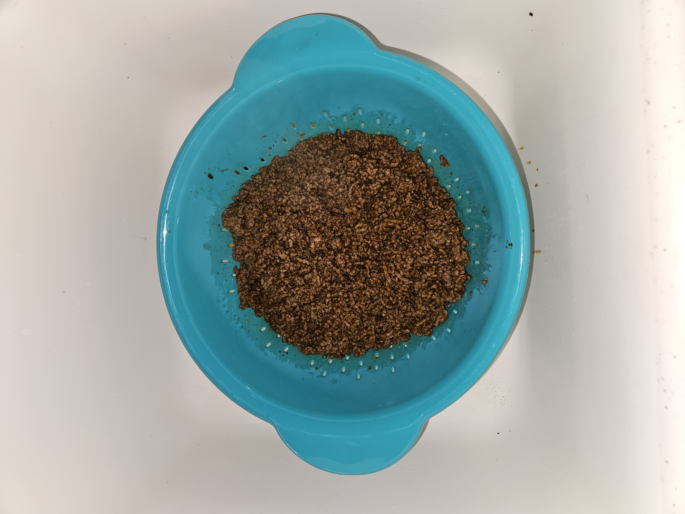
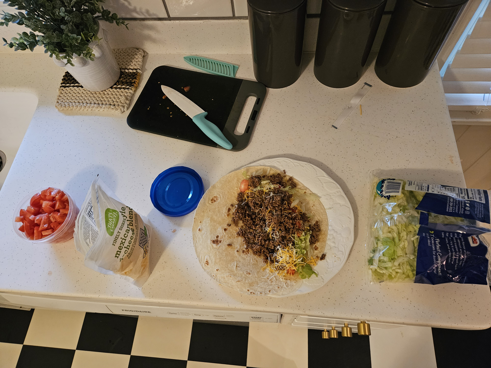
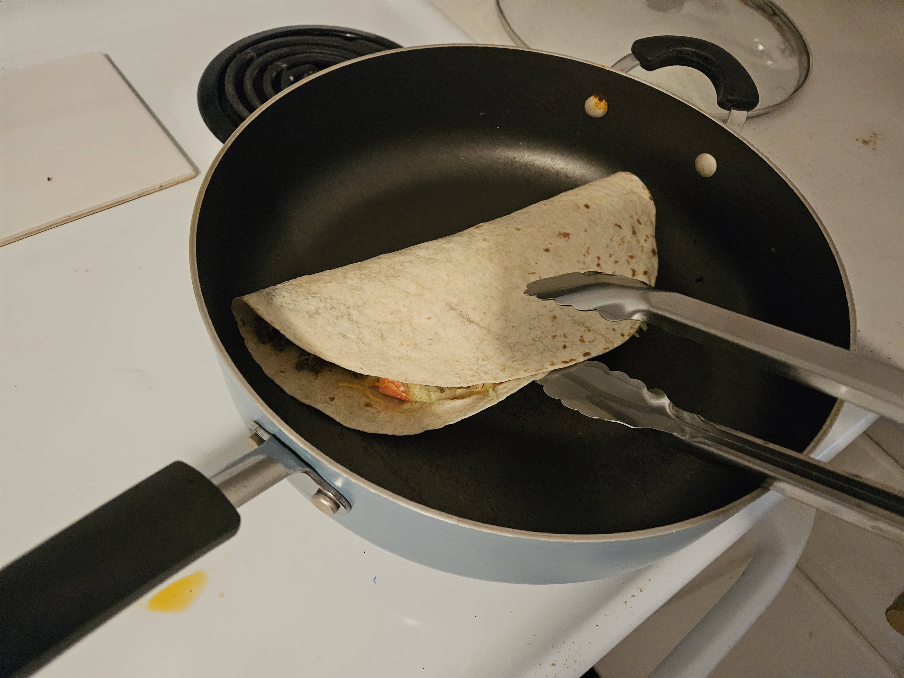
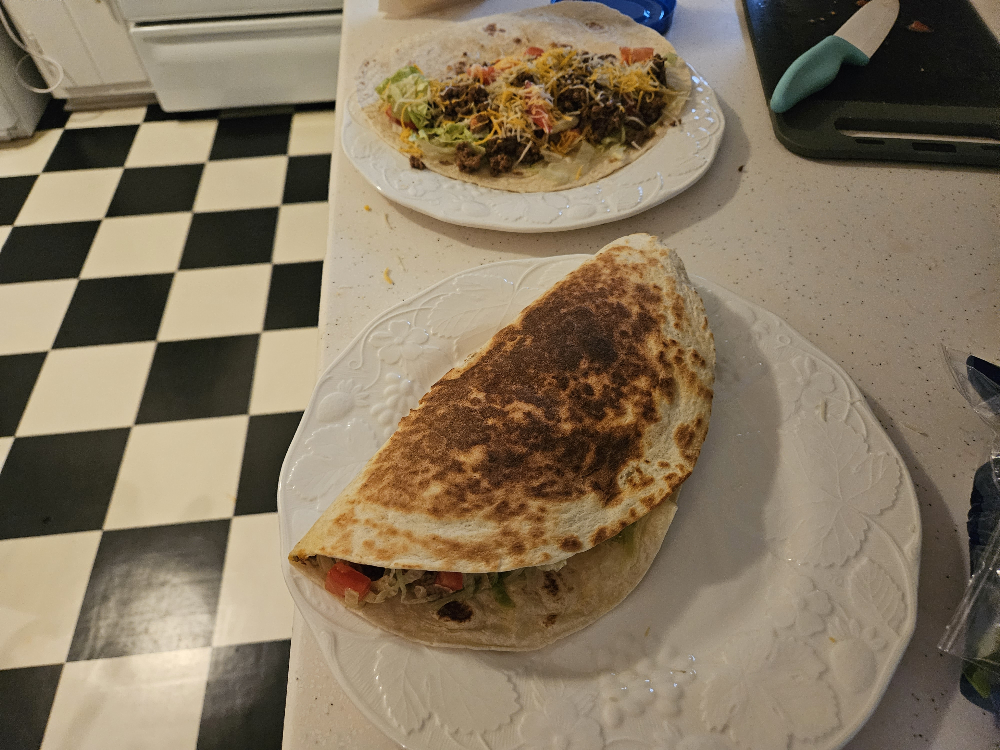

Recipes
Ingredients
- Ground Beef (How much you use is based on YOUR lifting goals.)
- Tortillas
- "Fiesta" blend of cheese. (Look for a "Fiesta", "Taco", or "Mexican" blend at your grocery store.)
- Shredded lettuce
- Taco Seasoning
- Tomatoes
- Much more can be added like onions, sour cream, beans, etc. What you put in the quesadilla is going to be based on your goals.
Cook your ground beef in a pan. Mix in the taco seasoning. Ensure it is cooked all the way.

Cut your tomatoes while your ground beef cooks. Make sure you don't cross contaminate, and make sure you are "stirring" your meat so that it does not burn to the pan.

When your beef is done, strain it.

Combine all of the ingredients into a tortilla

Sear the tortilla over medium heat. This takes about one minute per side

Enjoy your quesadilla.
